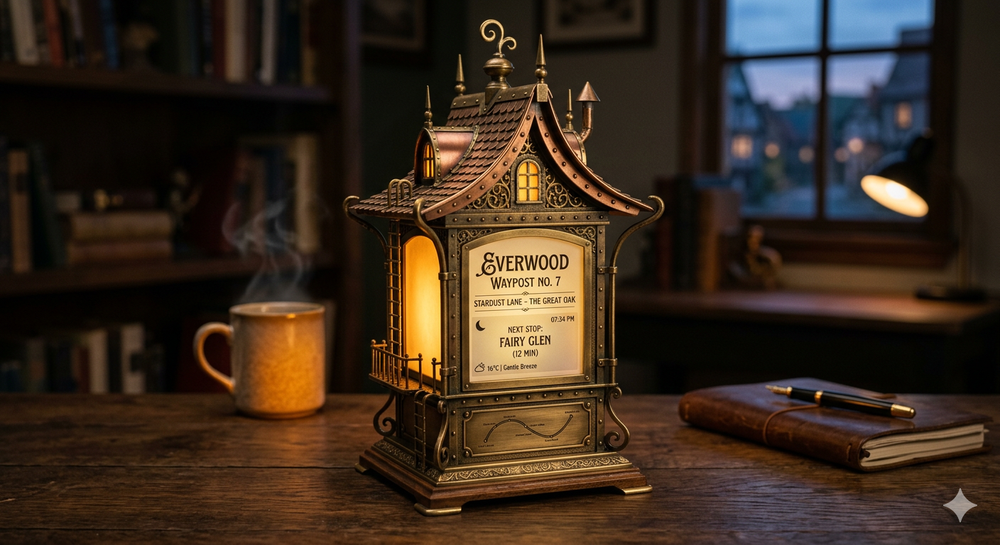

關於
由暖光、記憶感與想像空間所構成的原創桌上物件系列。
Concept Theory 以微縮建築、交通符號、詩意介面與電影感光影為出發點，創作出兼具收藏感、敘事性與情感撫慰力的桌上型設計物件。
這個系列在探索什麼
作品靈感來自魔幻現實主義、日本視覺文化、安靜的公共基礎設施、日常儀式感、微縮建築、村落轉運符號，以及那些看似平凡卻帶有情緒居住感的室內片段。
這些作品不以玩具或一般科技產品為定位，而是更接近一種具高級感、空間氛圍與情感功能的收藏型桌上物件。有些作品承載時間與提醒，有些表達狀態與情緒，也有些只是安靜地保留一個值得停留的場景。
整個系列始終維持同一個核心：克制的形式、可信的材質、柔和的光線，以及一種讓小型物件也能打開更大想像空間的能力。

核心主題
這個系列背後的三個重點
01
把微縮建築轉化為有情感溫度的桌上物件。
02
讓介面與資訊顯示保有詩意，而不只停留在功能。
03
以暖光作為陪伴感與安定感的核心媒介。
聯絡查詢
歡迎聯絡
如需合作、委託設計、展覽用途、產品開發討論或其他查詢，可透過你偏好的方式與我們聯絡。
- Email： imaginationsparkstudio@gmail.com
- Instagram： @conceptheory
- 用途： 創意合作 / 概念開發 / 收藏物件查詢
補充說明
作品方向
此網站展示的是原創概念物件與收藏型產品方向，核心在於氛圍、敘事節制與情感設計價值。
如有需要，後續亦可延伸成雙語目錄頁、展覽格式頁面，或更完整的產品型錄版面。